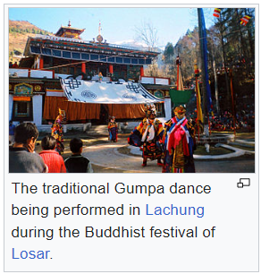

FESTIVALS AND HOLIDAYS

Sikkim's Gorkhali majority celebrate all major Hindu festivals, including Tihar (Diwali) and Dashain (Dashera).
Traditional local festivals, such as Maghe Sankranti, Ramnavmi, Janmastami, Holi, Shivaratri, Navratri, Sakela, Chasok Tangnam and Bhimsen Puja, are popular.
Losar, Saga Dawa, Lhabab Duechen, Drupka Teshi and Bhumchu are among the Buddhist festivals celebrated in Sikkim.
During the Losar (Tibetan New Year), most offices and educational institutions are closed for a week.
Sikkimese Muslims celebrate Eid ul-Fitr and Muharram.
Christmas has been promoted in Gangtok to attract tourists during the off-season.
Western rock music and Indian pop have gained a wide following in Sikkim.
Nepali rock and Lepcha music are also popular.
Sikkim's most popular sports are football and cricket, although hang gliding and
river rafting have grown popular as part of the tourism industry.